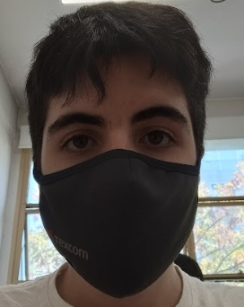

Formulario Personal
Nombre y apellido:
Sebastian Russo
- Hobbies: Estudio aleman todos los dias unas 4hs.
- Lugares visitados: Fui a mendoza San Rafael y lo que mas me gusto fue el centro de San Rafael y el Valle Grande.
- Mascotas: Tengo un caniche llamado Roki, muy tranquilo la verdad.
Biografia:
Soy Sebastian Russo, naci el 16 de Febrero de 2005, mi hobbie favorito es el aleman y el rubro industrial - sector automotriz. Estoy muy contento con la escuela en la que estoy aprendiendo.
